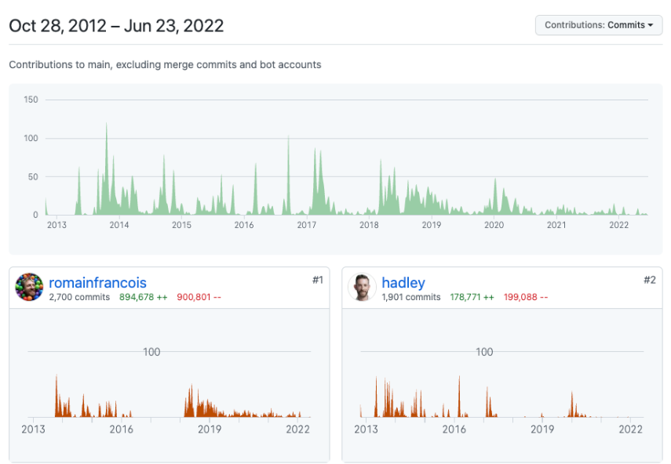
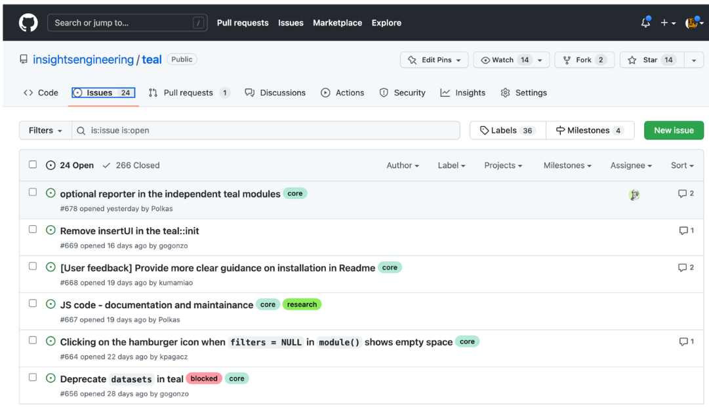

2 Using open-source
The following section is a non-exhaustive discussion of topics relevant when using open-source data science projects.
2.1 Open-source health
The communities that maintain and build open-source packages are diverse, and there are no set conventions on how they are maintained, resourced, and governed. There are no universal metrics to determine if an OS project is ‘healthy’. Health indicators such as project activity, apparent use, clear governance, and active maintainers are just that.
A project with no activity for years, for example, might be simply be considered ‘done’ and not necessarily because the project has been abandoned/superseded. ‘Done’ in the sense of being stable and feature complete perhaps due to a small and well-defined scope.
2.2 Understanding an open-source project
Many, but not all, open-source projects are on github.com or gitlab.com. On github.com, every repo contains a tab called Insights, from where you can see information on the people who contributed lines of code to a project. Of a particular interest might be the Contributor tab within Insights, an example screenshot of the dplyr R package contributor page is in Figure 2.1.
Some sites like openpharma.pharmaverse.org (specific to R and python packages in pharma) and OSS Insights; powerful tool for any project on GitHub) also provide more specific insights into the community engagement behind each project hosted on github.com.

dplyr R package2.2.1 The community behind a project
The activity on a project alone does not tell you the quality and extent of use of a project. Two examples are:
- A project could have almost no active community in terms of recent contributions or response to issues, much like the R package
survival, yet be a stable and critical package in R installations. - A project could also have no activity as it has been abandoned after or before it reached v1.0.
The community behind a project is also not limited to the people that contribute code. Users can also engage with a project via giving feedback via mechanisms like GitHub issues, emailing authors or engaging in discussions on GitHub issues. Figure 2.2 is an example of an issue page for the teal R package. The figure shows that teal has 24 open issues, and 266 closed issues. Small speech bubbles on the right of the figure show discussion have occurred on some issues.

By looking through issues, subjective impressions on community health can be made. Is it a few people giving feedback and one person developing? Does it have stale issues no-one replies to? Or does it have a lively community engaged in discussion and coordination?
Packages can also be open sourced without having the place they develop the code exposed to the general public. An example is the randomForest package, which is an open sourced (GPL-2/3) R package where the source code of the releases is open sourced for use, but the package authors do not give users access to view the place where they develop code. This does not mean the quality of the code is inferior, but does indicate there is an additional barrier to engaging with the package development as the first step would be to contact the authors.
Some things to consider when trying to establish the activity of a community are:
- How many individuals contributed to the project?
- What is the spread in contributions? What is the size of the ‘core’ group that contribute the majority of the code? What is the spread of commits—is it highly skewed to 1 or 2 people contributing?
- What is the recent and trends in commit activity? Is it currently active, formerly or is yet to become active?
- How many open and closed issues are there? If it’s a low number, is that in line with the age and expected use of the project?
- Are there ‘stale’ open issues, where issues remain open for months or years? Are many of these stale issues with comments, suggesting some discussion, or absent of comments suggesting there is no feedback loop present between issues and the codebase? A thing to also look for is whether closed issues are resolved, as some projects use bots to automatically close stale issues.
2.3 Finding open-source projects
Numerous methods exist to find projects. Specific to R projects, the following sources exist:
pharmaverse.org: opinionated/curated effort to provide end-to-end tools for clinical reporting.
openpharma.pharmaverse.org: un-opinionated tracker of packages built by pharma for pharma use cases. It also and indexes and provides package metadata in a dashboard, and provides metadata to pharmaverse.org.
The R universe hosts ecosystems of packages in CRAN-like repositories. As an example, the pharmaverse has the ‘bleeding edge’ of the main branches of all included R package available as a CRAN-like repository.
rseek.org: Google filter for R relevant content.
rinpharma.com/publication: the proceedings of the R/Pharma conference contain many relevant projects.
ROpenSci: maintains a list of packages they have vetted through their software review process, and they also categorise the packages by domain.
2.4 Balancing extending vs creating
Using R packages as an example, if your analysis plan requires creating a Kaplan-Meier plot, you could implement this using open code you program using R base plotting functions. Alternatively, you could introduce a dependency on a package that provides that functionality as a parameterised function, like survminer, visR or tern. Occasionally an existing package may be missing a feature you want, as can be derived from the presence of at least 3 R packages with a Kaplan-Meier plotting function. In such cases, you may need to extend, or start a new package.
When an existing tool is not a perfect fit, it can be difficult to decide whether to extend an existing package, or whether it may be worth starting a new one. Some resources to help understand how to contribute to a new package are:
- A blog post by Jim Hester on contributing to the tidyverse
- Many packages have a CONTRIBUTING.md file, or mention in the README.md, how you can contribute. They may also be a dedicated tag for issues discussing new features (e.g.
'enhancements').
2.5 Understanding the risks of using open-source
Risk can come from several domains including;
- Security, e.g. it has malicious code or inadvertently opens vulnerability.
- Quality, the package has poor documentation and code is unreliable.
- Accuracy, the package does not correctly reference what it does, or implements it incorrectly.
The R validation hub is a pan-pharma organisation, that aims to coordinate between pharma companies how the validation (and by extension risk assessment) in R packages is undertaken and documented. Of particular relevance is the Case Studies repository, which contains examples from Roche, Merck and Novartis (as of January 2023) on how they approach validation and risk mitigation. The R Validation Hub also created riskmetric as a tool to extract metrics relevant to validation, and is continuing work on the Risk Assessment App, which aims to provide an application that will surface these metrics to a user to help evaluate an R package.
A potentially critical future resource is also the R Validation Hub’s regulatory R package working group. This group has the following goal:
This working group strives to identify and prototype at least one technical framework that can support a transparent, open, dynamic, cross-industry approach of establishing and maintaining a ‘repository’ of R packages with accompanying evidence of their quality and the assessment criteria, that can be used to simplify necessary in-house validation processes as much as possible.
2.5.1 Tools that help document risk in R packages
Two toolsets have been released specifically for R packages, which differ in their underlying philosophy.
- Roche has also open sourced a github-action called thevalidatoR, which is available on Github Marketplace, which will generate a PDF with the unit testing results, as well as a traceability matrix of documentation against tested functionality in a specified container. The core belief in this approach is that a package that is well documented with Roxygen tags and
testthatunit tests provides the necessary information to validate a package implements it’s documented features. valtoolsfrom Fred Hutchinson Cancer Center places the logic for the validation documentation within the R package as a vignette, where the user manually adds the requirements and test cases.
The two approaches differ in their stance on what information should be added to a package vs already exists, but ultimately both aim to capture information that can be used to create necessary evidence for validation.
The oysteR R package can help scan R projects for known vulnerabilities via a REST API interface into the vendor tool OSS Index from sonatype.
2.6 The impact of different licences
The licence of projects you depend on, particularly if you incorporate the source code into your compiled/shared product, can have drastic effects on what you can do with your project. It is always important to seek in-house counsel advice on your companies position on different licence types.
As a general guidance:
- There are permissive licences that allow people to use a project in almost any way, through to copy-left licences that prevent distributing and, in some cases, monetizing any project that incorporates the dependency into its codebase.
- Two key resources to understand licence types are https://choosealicense.com/ and https://opensource.org/licenses.